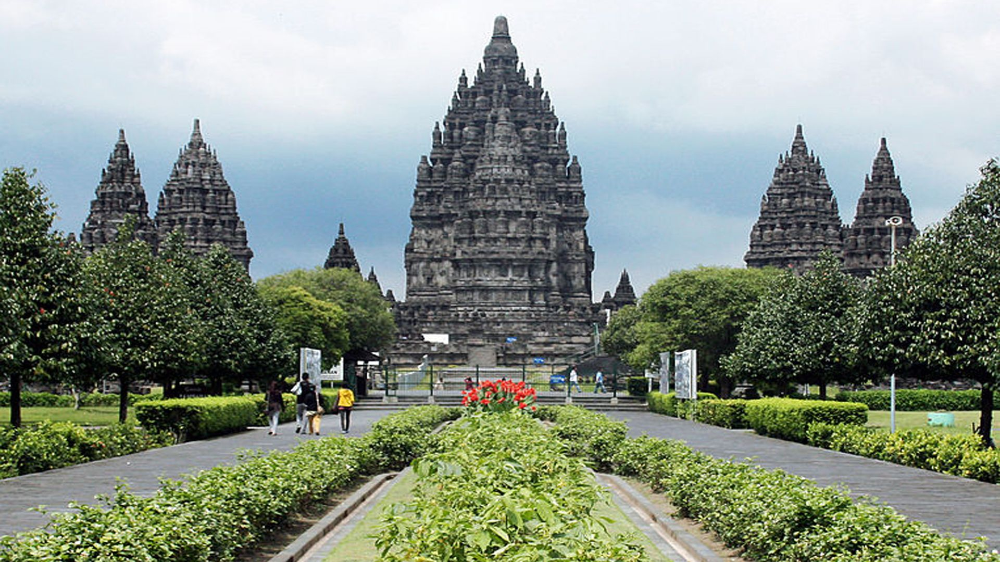
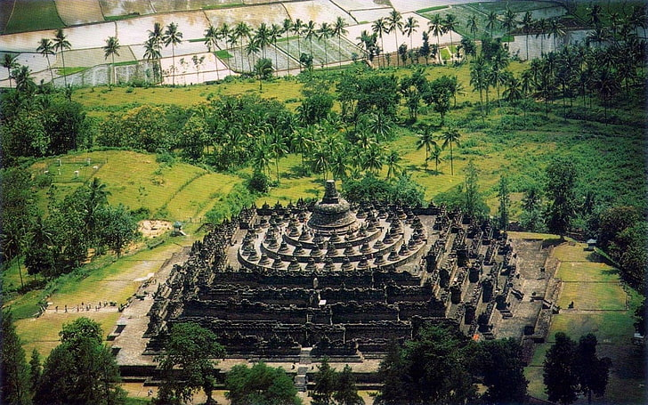
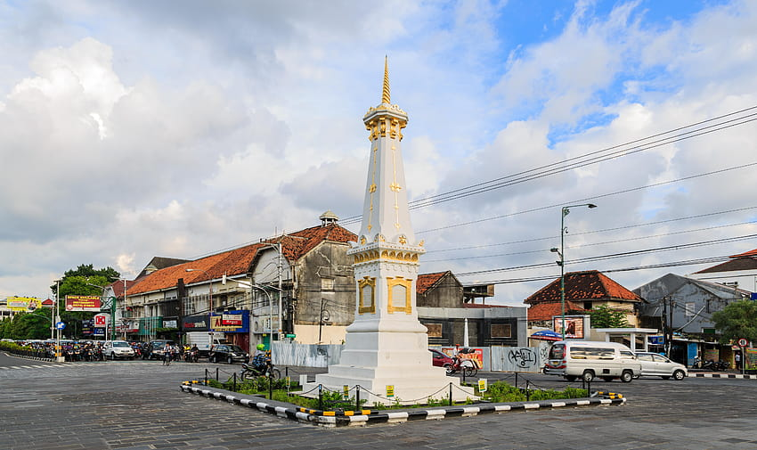
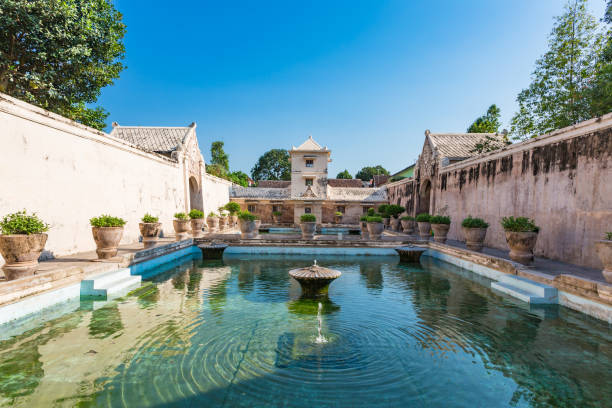

Kota Yogyakarta merupakan kota yang kaya akan budaya dan sejarah. Kota ini memiliki banyak tempat wisata yang menarik untuk dikunjungi. Banyak bangunan peninggalan yang sampai saat ini masih dirawat dan dijaga keasliannya.Dengan nilai filosofis dan sejarah yang tinggi, tempat-tempat ini menjadi tujuan wisata yang populer di Yogyakarta.Berikut adalah beberapa tempat yang dapat dikunjungi di Yogyakarta yang memiliki keindahan yang luar biasa dengan berbagai cerita yang menarik disetiap tempatnya.